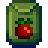
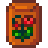

Pierre'in Bakkalı
| Pierre'in Bakkalı | |
 | |
 | |
| Açık Saatler: | Dükkân: 09.00 - 17.00 Bina: 09.00 - 21.00 |
| Kapalı Günler: | Çarşamba (Halkevi onarılmamışsa) |
| Adres: | Kasaba merkezinin kuzeyinde |
| Oturanlar: | |
Pierre'in Bakkalı; çeşitli tohumlar, fidanlar, gübreler, malzemeler ve diğer kullanışlı ögelerden satan bir dükkândır. Bu ögeleri satmanın yanı sıra Pierre de oyuncudan toplanmış ögeler, ekinler ve ekin tohumları, zanaat ürünleri, yemekler ve hayvan ürünleri alabilir. Pierre'e öge satarak geceye kadar gönderim için beklemekten kaçınılabilir ancak gönderim isteyen başarımlarda veya koleksiyonlarda sayılmaz. Başta tohumlar olmak üzere bazı ürünleri mevsime bağlı olarak değişirken bazıları ise bütün yıl boyunca stoktadır. Pierre'in vadideki başlıca rakibi JojaMart'tır.
Bakkalın dışında girişinin solunda bir takvim ve "Yardım Aranıyor" panosu bulunur.
Pierre'in Bakkalı normalde çoğu günde Pierre'in uyanmasından 3 saat sonra, 09.00'da açılır; 17.00'de kapanır. Binaya 21.00'e kadar girilebilir ancak Pierre her gün 17.00'de tezgahtan ayrıldığı için 17.00'den sonra ürün satın almak veya satmak için dükkâna erişilemez. Binaya sonraki saatlerde girilmeye devam edilebilmesinin sebebi de binanın aynı zamanda Pierre'in ailesinin evi olmasıdır.
İpucu: Öge satın alırken Shift + sağ veya sol tık yapılırsa beşerli, Control + Shift + sağ veya sol tık yapılırsa yirmi beşerli, Control + Shift + 1 + sol tık yapılırsa 999 adet alınır.
Olaylar
Bazı olaylarda bakkalın çalışma saatleri ve stoğu değişir.
- Pierre, bütün Halkevi yığınları tamamlanana veya oyuncu Kasaba Anahtarını elde edene dek çarşamba günleri kapalıdır. Ardından ise haftanın yedi günü açık olur.
- Pierre'in Kayıp Stok Listesi geri verildiğinde bütün yıl bütün mevsimlerin tohumlarını satar (mevsiminde olmayan tohumları %50 daha pahalıya satar).
- Eğer bu liste 1. yılda verilirse normalde 2. yılda satılması gereken tohumlar satılmaz, bunların satın alınabilmesi için oyuncunun yine 2. yılı beklemesi gerekir.
- Bir evlilik adayı ile 8 kalplik bir arkadaşlık düzeyine sahip olunduğunda çiçek buketi satın alınabilir olur.
Kalıcı Stok
| Görsel | İsim | Açıklama | Fiyat |
|---|---|---|---|
| Çimen Yetiştirici | Arazide çimen yetişmesi için çifltiğe yerleştirilir. | ||
| Çimen Yetiştirici (Tarif) | Çimen Yetiştirici yapma tarifi. | ||
| Şeker | Hamur işlerine ve tatlılara tadını verir. Fazlası sağlığa zararlı olabilir. | ||
| Buğday Unu | Ezilmiş buğdaydan elde edilen sıradan yemek malzemesi. | ||
| Pirinç | Genellikle sebzelerin altına konulan tahıl türü. | ||
| Yağ | Birden çok işlemde kullanılabilen yemeklik yağ. | ||
| Sirke | Birçok yemeğe konulan yıllanmış mayalı sıvı. | ||
| Sıradan Gübre | Toprağın kalitesini ve kaliteli ekin yetişme olasılığını birazcık arttırır. Sürülmüş toprağa karıştırılır. (1. yılın Bahar 15'inden itibaren satın alınabilir) |
||
| Kaliteli Gübre | Toprağın kalitesini ve kaliteli ekin yetişme olasılığını arttırır. Sürülmüş toprağa karıştırılır. (2. yıldan itibaren satın alınabilir) |
||
| Sıradan Tutucu Toprak | Az da olsa, bu toprağın geceleyin ıslak kalma olasılığı vardır. Sürülmüş toprağa karıştırılır. (1. yılın Bahar 15'inden itibaren satın alınabilir) |
||
| Kaliteli Tutucu Toprak | Bu toprağın geceleyin ıslak kalma olasılığı çoktur. Sürülmüş toprağa karıştırılır. (2. yıldan itibaren satın alınabilir) |
||
| Hızlı-Ek | Ekin oluşumunu kamçılar. Yetişme hızını en az %10 arttırır. Sürülmüş toprağa karıştırılır. (1. yılın Bahar 15'inden itibaren satın alınabilir) |
||
| Üstün Hızlı-Ek | Ekin oluşumunu kamçılar. Yetişme hızını en az %25 arttırır. Sürülmüş toprağa karıştırılır. (2. yıldan itibaren satın alınabilir) |
||
| Duvar Kağıdı (Her gün rastgele bir tane) | Bir odanın duvar kağıdını şekillendirir. | ||
| Döşeme (Her gün rastgele bir tane) | Bir odanın döşemelerini şekillendirir. | ||
| Kiraz Fidanı | Kirazın olgunlaşması 28 gün sürer. Baharda meyve verir. Yalnızca bitişiğindeki 8 "kare" boşken yetişir. | ||
| Kayısı Fidanı | Kayısının olgunlaşması 28 gün sürer. Baharda meyve verir. Yalnızca bitişiğindeki 8 "kare" boşken yetişir. | ||
| Portakal Fidanı | Portakalın olgunlaşması 28 gün sürer. Yazın meyve verir. Yalnızca bitişiğindeki 8 "kare" boşken yetişir. | ||
| Şeftali Fidanı | Şeftalinin olgunlaşması 28 gün sürer. Yazın meyve verir. Yalnızca bitişiğindeki 8 "kare" boşken yetişir. | ||
| Nar Fidanı | Narın olgunlaşması 28 gün sürer. Güzde meyve verir. Yalnızca bitişiğindeki 8 "kare" boşken yetişir. | ||
| Elma Fidanı | Elmanın olgunlaşması 28 gün sürer. Güzde meyve verir. Yalnızca bitişiğindeki 8 "kare" boşken yetişir. | ||
| Katalog | Evinize uygun tüm duvar kağıtları ve zeminlere sınırsız erişim sağlar! | ||
| Kurutucu (Tarif) | Kurutucu yapma tarifi. | ||
| Buket | Birinden hoşlandığını gösteren hediye. (Bir evlilik adayı ile 8 kalbe ulaşıldığında gelir.) |
Pierre ayrıca oyuncunun satın alabileceği sırt çantası geliştirmeleri satar. Pierre'in dükkân menüsü yerine tezgahın sağ tarafında bulunurlar.
| Görsel | İsim | Fiyat | Açıklama | Gereksinim |
|---|---|---|---|---|
| Geniş Sırt Çantası | Envanterdeki 2. sırayı açar (12 yuva ekler, toplamda 24 olur). | |||
| Devasa Sırt Çantası | Envanterdeki 3. sırayı açar (12 yuva ekler, toplamda 36 olur). | Geniş Sırt Çantası alınmış olmalı. |
Bahar Stoğu
| Görsel | İsim | Açıklama | Fiyat | |
|---|---|---|---|---|
| Yaban Havucu Tohumu | Baharda ekilir. 4 günde yetişir. | |||
| Fasulye Yetiştirici | Baharda ekilir. 10 günde yetişir ve sonrasında yetişmeye devam eder. Sırıkta yetişir. | |||
| Karnabahar Tohumu | Baharda ekilir. 12 günde yetişir. | |||
| Patates Tohumu | Baharda ekilir. 6 günde yetişir. Hasat sırasında birden çok ürün verme olasılığına sahiptir. | |||
| Lale Soğanı | Baharda ekilir. Çiçeği 6 günde yetişir. Çeşit çeşit renktedir. | |||
| Lahana Tohumu | Baharda ekilir. 6 günde yetişir. Tırpanla hasat edilir. | |||
| Maviruh Tohumu | Baharda ekilir. Mavi renkli topa benzeyen çiçeği 7 günde yetişir. | |||
| Sarımsak Tohumu | Baharda ekilir. 4 günde yetişir. (2. yıldan itibaren satın alınabilir) |
|||
| Pirinç Filizi | Baharda ekilir. 8 günde yetişir. Bir su kütlesinin yakınına ekilirse daha hızlı büyür. Tırpanla hasat edilir. (2. yıldan itibaren satın alınabilir) |
|||
Yaz Stoğu
| Görsel | İsim | Açıklama | Fiyat | |
|---|---|---|---|---|
| Kavun Tohumu | Yazın ekilir. 12 günde yetişir. | |||
|  | Domates Tohumu | Yazın ekilir. 11 günde yetişir ve ilk hasattan sonra yetişmeye devam eder. | ||
| Yaban Mersini Tohumu | Yazın ekilir. 13 günde yetişir ve ilk hasattan sonra yetişmeye devam eder. | |||
| Biber Tohumu | Yazın ekilir. 5 günde yetişir ve ilk hasattan sonra yetişmeye devam eder. | |||
| Buğday Tohumu | Yaz ve güz mevsimlerinde ekilir. 4 günde yetişir. Tırpanla hasat edilir. | |||
| Turp Tohumu | Yazın ekilir. 6 günde yetişir. | |||
|  | Haşhaş Tohumu | Yazın ekilir. Parlak kırmızı çiçeği 7 günde yetişir. | ||
| Yazpulu Tohumu | Yazın ekilir. Gür çiçeği 8 günde yetişir. Çeşit çeşit renktedir. | |||
| Şerbetçi Otu Yetiştirici | Yazın ekilir. 11 günde yetişir ve sonrasında yetişmeye devam eder. Sırıkta yetişir. | |||
| Mısır Tohumu | Yaz ve güz mevsimlerinde ekilir. 14 günde yetişir ve ilk hasattan sonra yetişmeye devam eder. | |||
| Ayçiçeği Tohumu | Yaz ve güz mevsimlerinde ekilir. 8 günde yetişir. Hasatta fazladan tohum verir. | |||
| Kırmızı Lahana Tohumu | Yazın ekilir. 9 günde yetişir. (2. yıldan itibaren satın alınabilir) |
|||
Güz Stoğu
| Görsel | İsim | Açıklama | Fiyat | |
|---|---|---|---|---|
| Patlıcan Tohumu | Güzde ekilir. 5 günde yetişir ve ilk hasattan sonra yetişmeye devam eder. | |||
| Mısır Tohumu | Yaz ve güz mevsimlerinde ekilir. 14 günde yetişir ve ilk hasattan sonra yetişmeye devam eder. | |||
| Bal Kabağı Tohumu | Güzde ekilir. 13 günde yetişir. | |||
| Çin Lahanası Tohumu | Güzde ekilir. 4 günde yetişir. | |||
| Tatlı Patates Tohumu | Güzde ekilir. 10 günde yetişir. | |||
| Kızılcık Tohumu | Güzde ekilir. 7 günde yetişir ve ilk hasattan sonra yetişmeye devam eder. | |||
| Ayçiçeği Tohumu | Yaz ve güz mevsimlerinde ekilir. 8 günde yetişir. Hasatta fazladan tohum verir. | |||
| Perigülü Tohumu | Güzde ekilir. Gizemli çiçeği 12 günde yetişir. Çeşit çeşit renktedir. | |||
| Horozibiği Tohumu | Güzde ekilir. 7 günde yetişir. Tırpanla hasat edilir. | |||
| Üzüm Yetiştirici | Güzde ekilir. 10 günde yetişir ve sonrasında yetişmeye devam eder. Sırıkta yetişir. | |||
| Buğday Tohumu | Yaz ve güz mevsimlerinde ekilir. 4 günde yetişir. Tırpanla hasat edilir. | |||
| Enginar Tohumu | Güzde ekilir. 8 günde yetişir. (2. yıldan itibaren satın alınabilir) |
|||
Oyuncu Kaynaklı Stok
Oyuncu, Pierre'e özellikle fazla miktarda öge satarsa bu ögelerin tekrar stokta belirme ihtimali vardır. Yenilebilir ögeler ise sınırlı miktarda satın alınabilir olur. Üstelik bazı kasabalılarda bu ögeler hakkında konuştukları özle diyaloglar çıkabilir. Normal kalitede satılan ögeleri kötülerken gümüş veya daha fazla yüksek kalitedeki ögeleri sevdiklerini söylerler.
Yaşam Alanları
Abigail'in odası ve Pierre ile Caroline'ın yatak odası, dükkânın kuzeyindedir. Ortada salı günleri 13.00 ile 16.00 arasında Caroline, Jodi, Robin, Emily ve Marnie'nin egzersiz yapmak için buluştuğu büyük bir alan bulunur. Sağ üst köşede mutfak ve Caroline'ın kış bahçesine açılan bir kapı bulunur. Doğuda ise pazar günleri dinî aktiviteler için kullanılan Yoba Mabedi bulunur.
Hatalar
- Kasaba Anahtarı elde edildikten sonra Pierre 06.00'da tezgahta durur. 07.00'de tezgahtan ayrılıp reyonlara doğru gider ve bu süre zarfında oyuncu bir şey satın alamaz. 08.30'da reyonlardan ayrılıp tekrar tezgaha geçer.
Ek Bilgiler
- Pierre genelde oyuncunun ona sattığı ögeleri tekrar satışa koyarken kendisinin yaptığını veya bulduğunu söyler.
- Kışta dükkâna girerken Pierre "Pierre'in ısıtılmış dükkanına hoş geldin!" diyebilir. Ancak onunla konuşulursa "Bana mı öyle geliyor yoksa cereyan mı var?" diyebilir.
- Kışta tohum satmamasına rağmen dükkâna girerken Pierre "Satılık tohum bulunur!" diyebilir.
- Dükkâna girerken düşük bir ihtimalle konuşma balonu ile "Cüzdanının yerini hatırlıyor musun?" diyebilir.
Galeri

İçi
Geçmiş
- 1.4: Bir dükkân menüsündeyken Alt + Enter yapınca tutulan ögenin yok olması düzeltildi. Pierre artık oyuncudan balık almıyor (çünkü Willy alıyor).
- 1.6: Stoğa Kurutucu tarifi eklendi. Pierre'in dükkânı çarşamba günleri de çalışmaya başlamasına rağmen dünya haritasında açıklamasında "Çarşambaları kapalıdır" yazmaya devam etmesi düzeltildi. Bilgisayarda, artık sol tık + sol CTRL + 1 yapıldığında ögeden 999 adet alınır. Döşeme ve duvar kağıdı fiyatı
 100g yerine 200g olarak artırıldı. Oyuncunun Pierre'e Qi Meyvesi satıp ardından "Qi Ekini" görevi sona erdikten sonra geri alabilmesi düzeltildi. Oyuncunun Pierre'e Çoban uzmanlık alanı fiyatı ile Zanaat Ürünü satıp ardından Belirsiz Heykelinde uzmanlığı değiştirip ögeleri daha ucuza geri alabilmesi düzeltildi.
100g yerine 200g olarak artırıldı. Oyuncunun Pierre'e Qi Meyvesi satıp ardından "Qi Ekini" görevi sona erdikten sonra geri alabilmesi düzeltildi. Oyuncunun Pierre'e Çoban uzmanlık alanı fiyatı ile Zanaat Ürünü satıp ardından Belirsiz Heykelinde uzmanlığı değiştirip ögeleri daha ucuza geri alabilmesi düzeltildi.
| Binalar | ||
|---|---|---|
| Tüccarlar | Ada Taciri • Balıkçı • Bay Qi'nin Ceviz Odası • Büyücü'nün Kulesi • Çöl Tüccarı • Demirci • Dondurma Standı • Gezgin Araba • Harvey'nin Sağlık Ocağı • JojaMart • Kumarhane • Maceraperestler Loncası • Marangoz Atölyesi • Marnie'nin Çiftliği • Pierre'in Bakkalı • Vaha • Yanardağdaki Cüce • Yıkık Ev • Yıldızkaydı Salonu | |
| Evler | Ada Çiftlik Evi • Ağaç Ev • Başkan'ın Köşkü • Çadır • Çiftlik Evi • Elliott'ın Barakası • Irmak Sokağı, No: 1 • Irmak Sokağı, No: 2 • Karavan • Leah'nın Barakası • Dağ Sokağı, No: 24 • Söğüt Sokağı, No: 1 • Söğüt Sokağı, No: 2 | |
| Çiftlik Yapıları | Çiftçilik | Ahır • At Ahırı • Balçıkça Kümesi • Balık Havuzu • Baraka • Kulübe • Değirmen • Kuyu • Kümes • Sera • Silo |
| Özel | Ada Dikilitaşı • Altın Saat • Çiftlik Dikilitaşı • Çöl Dikilitaşı • Junimo Barakası • Su Dikilitaşı • Toprak Dikilitaşı | |
| Diğer Binalar | Araştırma Çadırı • Cadı'nın Barakası • Halkevi • Hamam • Joja Deposu • Köpek Oyun Alanı • Müze • Sinema Salonu | |